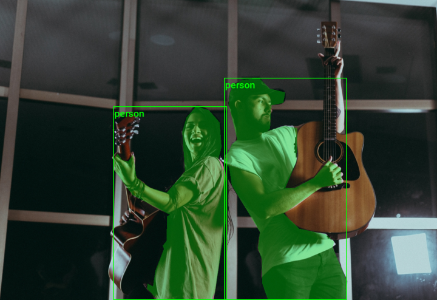
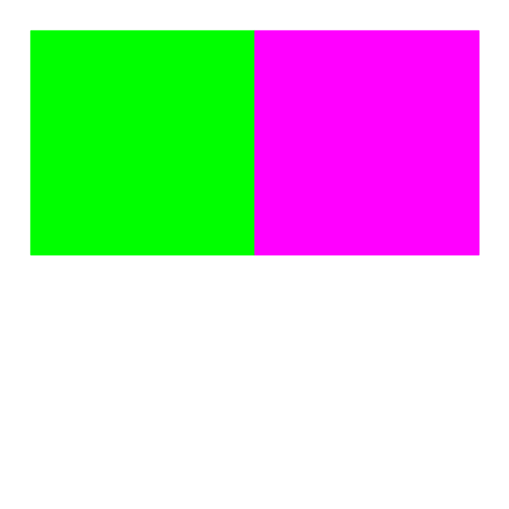
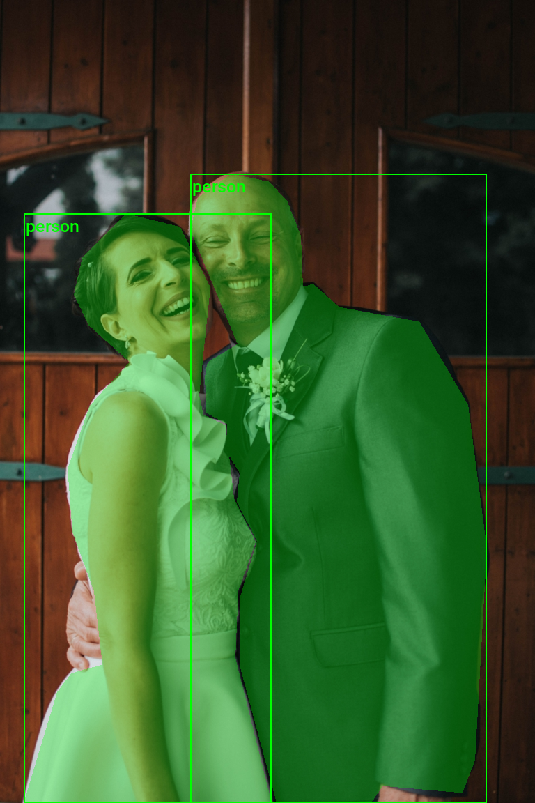
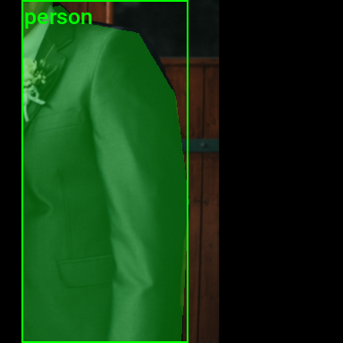
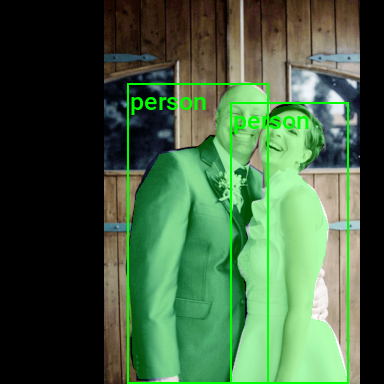

Working with COCO Segmentation Annotations in Torchvision
- Introduction
- Getting Started with the Code
- Setting Up Your Python Environment
- Importing the Required Dependencies
- Loading and Exploring the Dataset
- Preparing the Data
- Conclusion
Introduction
Welcome to this hands-on guide for working with COCO-formatted segmentation annotations in torchvision. Segmentation annotations indicate the pixels occupied by specific objects or areas of interest in images for training models to recognize and delineate these objects at a pixel level.

The tutorial walks through setting up a Python environment, loading the raw annotations into a Pandas DataFrame, annotating and augmenting images using torchvision’s Transforms V2 API, and creating a custom Dataset class to feed samples to a model.
This guide is suitable for beginners and experienced practitioners, providing the code, explanations, and resources needed to understand and implement each step. By the end, you will have a solid foundation for working with COCO segmentation annotations in torchvision for instance segmentation tasks.
Getting Started with the Code
The tutorial code is available as a Jupyter Notebook, which you can run locally or in a cloud-based environment like Google Colab. I have dedicated tutorials for those new to these platforms or who need guidance setting up:
| Jupyter Notebook: | GitHub Repository | Open In Colab |
|---|---|---|
Setting Up Your Python Environment
Before diving into the code, we’ll cover the steps to create a local Python environment and install the necessary dependencies.
Creating a Python Environment
First, we’ll create a Python environment using Conda/Mamba. Open a terminal with Conda/Mamba installed and run the following commands:
# Create a new Python 3.10 environment
conda create --name pytorch-env python=3.10 -y
# Activate the environment
conda activate pytorch-env# Create a new Python 3.10 environment
mamba create --name pytorch-env python=3.10 -y
# Activate the environment
mamba activate pytorch-envInstalling PyTorch
Next, we’ll install PyTorch. Run the appropriate command for your hardware and operating system.
# Install PyTorch with CUDA
pip install torch torchvision torchaudio --index-url https://download.pytorch.org/whl/cu121# MPS (Metal Performance Shaders) acceleration is available on MacOS 12.3+
pip install torch torchvision torchaudio# Install PyTorch for CPU only
pip install torch torchvision torchaudio --index-url https://download.pytorch.org/whl/cpu# Install PyTorch for CPU only
pip install torch torchvision torchaudioInstalling Additional Libraries
We also need to install some additional libraries for our project.
| Package | Description |
|---|---|
jupyter |
An open-source web application that allows you to create and share documents that contain live code, equations, visualizations, and narrative text. (link) |
matplotlib |
This package provides a comprehensive collection of visualization tools to create high-quality plots, charts, and graphs for data exploration and presentation. (link) |
pandas |
This package provides fast, powerful, and flexible data analysis and manipulation tools. (link) |
pillow |
The Python Imaging Library adds image processing capabilities. (link) |
tqdm |
A Python library that provides fast, extensible progress bars for loops and other iterable objects in Python. (link) |
distinctipy |
A lightweight python package providing functions to generate colours that are visually distinct from one another. (link) |
Run the following commands to install these additional libraries:
# Install additional dependencies
pip install distinctipy jupyter matplotlib pandas pillow tqdmInstalling Utility Packages
We will also install some utility packages I made, which provide shortcuts for routine tasks.
| Package | Description |
|---|---|
cjm_pil_utils |
Some PIL utility functions I frequently use. (link) |
cjm_psl_utils |
Some utility functions using the Python Standard Library. (link) |
cjm_pytorch_utils |
Some utility functions for working with PyTorch. (link) |
cjm_torchvision_tfms |
Some custom Torchvision tranforms. (link) |
Run the following commands to install the utility packages:
# Install additional utility packages
pip install cjm_pil_utils cjm_psl_utils cjm_pytorch_utils cjm_torchvision_tfmsWith our environment set up, we can open our Jupyter Notebook and dive into the code.
Importing the Required Dependencies
First, we will import the necessary Python packages into our Jupyter Notebook.
# Import Python Standard Library dependencies
from functools import partial
from pathlib import Path
# Import utility functions
from cjm_pil_utils.core import get_img_files
from cjm_psl_utils.core import download_file, file_extract
from cjm_pytorch_utils.core import tensor_to_pil
from cjm_torchvision_tfms.core import ResizeMax, PadSquare, CustomRandomIoUCrop
# Import the distinctipy module
from distinctipy import distinctipy
# Import matplotlib for creating plots
import matplotlib.pyplot as plt
# Import numpy
import numpy as np
# Import the pandas package
import pandas as pd
# Do not truncate the contents of cells and display all rows and columns
pd.set_option('max_colwidth', None, 'display.max_rows', None, 'display.max_columns', None)
# Import PIL for image manipulation
from PIL import Image, ImageDraw
# Import PyTorch dependencies
import torch
from torch.utils.data import Dataset, DataLoader
# Import torchvision dependencies
import torchvision
torchvision.disable_beta_transforms_warning()
from torchvision.tv_tensors import BoundingBoxes, Mask
from torchvision.utils import draw_bounding_boxes, draw_segmentation_masks
import torchvision.transforms.v2 as transforms
# Import tqdm for progress bar
from tqdm.auto import tqdmTorchvision provides dedicated torch.Tensor subclasses for different annotation types called TVTensors. Torchvision’s V2 transforms use these subclasses to update the annotations based on the applied image augmentations. The TVTensor class for segmentation annotations is called Mask. Torchvision also includes a draw_segmentation_masks function to annotate images.
Loading and Exploring the Dataset
After importing the dependencies, we can start working with our data. I annotated a toy dataset with segmentation masks for this tutorial using images from the free stock photo site Pexels. The dataset is available on HuggingFace Hub at the link below:
- Dataset Repository: coco-instance-segmentation-toy-dataset
Setting the Directory Paths
We first need to specify a place to store our dataset and a location to download the zip file containing it. The following code creates the folders in the current directory (./). Update the path if that is not suitable for you.
# Define path to store datasets
dataset_dir = Path("./Datasets/")
# Create the dataset directory if it does not exist
dataset_dir.mkdir(parents=True, exist_ok=True)
# Define path to store archive files
archive_dir = dataset_dir/'../Archive'
# Create the archive directory if it does not exist
archive_dir.mkdir(parents=True, exist_ok=True)
# Creating a Series with the paths and converting it to a DataFrame for display
pd.Series({
"Dataset Directory:": dataset_dir,
"Archive Directory:": archive_dir
}).to_frame().style.hide(axis='columns')| Dataset Directory: | Datasets |
|---|---|
| Archive Directory: | Datasets/../Archive |
Setting the Dataset Path
Next, we construct the name for the Hugging Face Hub dataset and set where to download and extract the dataset.
# Set the name of the dataset
dataset_name = 'coco-instance-segmentation-toy-dataset'
# Construct the HuggingFace Hub dataset name by combining the username and dataset name
hf_dataset = f'cj-mills/{dataset_name}'
# Create the path to the zip file that contains the dataset
archive_path = Path(f'{archive_dir}/{dataset_name}.zip')
# Create the path to the directory where the dataset will be extracted
dataset_path = Path(f'{dataset_dir}/{dataset_name}')
# Creating a Series with the dataset name and paths and converting it to a DataFrame for display
pd.Series({
"HuggingFace Dataset:": hf_dataset,
"Archive Path:": archive_path,
"Dataset Path:": dataset_path
}).to_frame().style.hide(axis='columns')| HuggingFace Dataset: | cj-mills/coco-instance-segmentation-toy-dataset |
|---|---|
| Archive Path: | Datasets/../Archive/coco-instance-segmentation-toy-dataset.zip |
| Dataset Path: | Datasets/coco-instance-segmentation-toy-dataset |
Downloading the Dataset
We can now download the archive file and extract the dataset using the download_file and file_extract functions from the cjm_psl_utils package. We can delete the archive afterward to save space.
# Construct the HuggingFace Hub dataset URL
dataset_url = f"https://huggingface.co/datasets/{hf_dataset}/resolve/main/{dataset_name}.zip"
print(f"HuggingFace Dataset URL: {dataset_url}")
# Set whether to delete the archive file after extracting the dataset
delete_archive = True
# Download the dataset if not present
if dataset_path.is_dir():
print("Dataset folder already exists")
else:
print("Downloading dataset...")
download_file(dataset_url, archive_dir)
print("Extracting dataset...")
file_extract(fname=archive_path, dest=dataset_dir)
# Delete the archive if specified
if delete_archive: archive_path.unlink()Getting the Image and Annotation Folders
The dataset has two folders containing the sample images and annotations. The image folder organizes all samples together. The annotations are in a single JSON file.
# Assuming the images are stored in a subfolder named 'images'
img_dir = dataset_path/'images/'
# Assuming the annotation file is in JSON format and located in a subdirectory of the dataset
annotation_file_path = list(dataset_path.glob('*/*.json'))[0]
# Creating a Series with the paths and converting it to a DataFrame for display
pd.Series({
"Image Folder": img_dir,
"Annotation File": annotation_file_path}).to_frame().style.hide(axis='columns')| Image Folder | Datasets/coco-instance-segmentation-toy-dataset/images |
|---|---|
| Annotation File | Datasets/coco-instance-segmentation-toy-dataset/annotations/instances_default.json |
Get Image File Paths
Each image file has a unique name that we can use to locate the corresponding annotation data. We can make a dictionary that maps image names to file paths. The dictionary will allow us to retrieve the file path for a given image more efficiently.
# Get all image files in the 'img_dir' directory
img_dict = {
file.stem : file # Create a dictionary that maps file names to file paths
for file in get_img_files(img_dir) # Get a list of image files in the image directory
}
# Print the number of image files
print(f"Number of Images: {len(img_dict)}")
# Display the first five entries from the dictionary using a Pandas DataFrame
pd.DataFrame.from_dict(img_dict, orient='index').head()Number of Images: 31| 0 | |
|---|---|
| adults-affection-attractive-2760688 | Datasets/coco-instance-segmentation-toy-dataset/images/adults-affection-attractive-2760688.jpg |
| 258421 | Datasets/coco-instance-segmentation-toy-dataset/images/258421.jpg |
| 3075367 | Datasets/coco-instance-segmentation-toy-dataset/images/3075367.jpg |
| 3076319 | Datasets/coco-instance-segmentation-toy-dataset/images/3076319.jpg |
| 3145551 | Datasets/coco-instance-segmentation-toy-dataset/images/3145551.jpg |
Get Image Annotations
Next, we read the content of the JSON annotation file into a Pandas DataFrame so we can easily query the annotations.
Load the annotation file into a DataFrame
We will transpose the DataFrame to store each section in the JSON file in a separate column.
# Read the JSON file into a DataFrame, assuming the JSON is oriented by index
annotation_file_df = pd.read_json(annotation_file_path, orient='index').transpose()
annotation_file_df.head()| licenses | info | categories | images | annotations | |
|---|---|---|---|---|---|
| 0 | {‘name’: ’‘, ’id’: 0, ‘url’: ’’} | contributor | {‘id’: 1, ‘name’: ‘person’, ‘supercategory’: ’’} | {‘id’: 1, ‘width’: 768, ‘height’: 1152, ‘file_name’: ‘258421.jpg’, ‘license’: 0, ‘flickr_url’: ’‘, ’coco_url’: ’‘, ’date_captured’: 0} | {‘id’: 1, ‘image_id’: 1, ‘category_id’: 1, ‘segmentation’: [[377.0, 775.5, 368.0, 774.5, 346.5, 764.0, 349.5, 751.0, 348.5, 707.0, 358.5, 668.0, 343.5, 651.0, 359.5, 605.0, 379.5, 583.0, 366.01, 583.39, 362.55, 575.78, 361.85, 565.4, 353.2, 557.09, 357.7, 547.4, 350.78, 532.53, 356.32, 520.76, 359.78, 481.31, 376.39, 467.47, 387.46, 469.55, 401.3, 484.08, 405.8, 501.04, 394.03, 505.88, 394.73, 519.03, 399.92, 531.14, 374.66, 554.33, 369.81, 571.28, 374.31, 574.05, 388.15, 574.39, 397.49, 569.9, 402.5, 578.0, 410.5, 594.0, 412.5, 668.0, 387.0, 667.5, 375.5, 692.0, 376.5, 738.0, 380.5, 753.0, 388.5, 764.0, 386.5, 772.0]], ‘area’: 11461.0, ‘bbox’: [343.5, 467.47, 69.0, 308.03], ‘iscrowd’: 0, ‘attributes’: {‘occluded’: False}} |
| 1 | None | date_created | {‘id’: 2, ‘name’: ‘car’, ‘supercategory’: ’’} | {‘id’: 2, ‘width’: 1344, ‘height’: 768, ‘file_name’: ‘3075367.jpg’, ‘license’: 0, ‘flickr_url’: ’‘, ’coco_url’: ’‘, ’date_captured’: 0} | {‘id’: 2, ‘image_id’: 1, ‘category_id’: 1, ‘segmentation’: [[404.0, 775.5, 396.5, 766.0, 411.5, 753.0, 411.5, 738.0, 416.5, 731.0, 412.5, 598.0, 419.5, 559.0, 416.0, 554.5, 404.0, 566.5, 387.0, 572.5, 375.5, 566.0, 377.5, 554.0, 405.5, 529.0, 413.5, 504.0, 414.5, 493.0, 386.5, 463.0, 388.5, 453.0, 399.0, 443.5, 413.0, 444.5, 423.5, 453.0, 457.5, 506.0, 452.5, 575.0, 458.5, 607.0, 447.5, 635.0, 444.5, 676.0, 452.5, 764.0, 443.0, 770.5]], ‘area’: 13476.0, ‘bbox’: [375.5, 443.5, 83.0, 332.0], ‘iscrowd’: 0, ‘attributes’: {‘occluded’: False}} |
| 2 | None | description | None | {‘id’: 3, ‘width’: 768, ‘height’: 1120, ‘file_name’: ‘3076319.jpg’, ‘license’: 0, ‘flickr_url’: ’‘, ’coco_url’: ’‘, ’date_captured’: 0} | {‘id’: 3, ‘image_id’: 2, ‘category_id’: 1, ‘segmentation’: [[829.0, 466.5, 825.5, 464.0, 824.5, 455.0, 825.5, 425.0, 828.0, 419.5, 833.5, 418.0, 827.5, 417.0, 822.5, 396.0, 825.5, 327.0, 843.5, 313.0, 842.5, 296.0, 833.5, 291.0, 832.5, 270.0, 837.0, 265.5, 856.0, 264.5, 868.5, 277.0, 870.5, 306.0, 881.5, 318.0, 883.5, 329.0, 893.0, 332.5, 899.5, 340.0, 901.5, 367.0, 883.5, 382.0, 849.5, 443.0, 842.5, 448.0, 838.5, 460.0]], ‘area’: 8982.0, ‘bbox’: [822.5, 264.5, 79.0, 202.0], ‘iscrowd’: 0, ‘attributes’: {‘occluded’: False}} |
| 3 | None | url | None | {‘id’: 4, ‘width’: 1184, ‘height’: 768, ‘file_name’: ‘3145551.jpg’, ‘license’: 0, ‘flickr_url’: ’‘, ’coco_url’: ’‘, ’date_captured’: 0} | {‘id’: 4, ‘image_id’: 2, ‘category_id’: 1, ‘segmentation’: [[714.0, 766.5, 664.0, 765.5, 654.0, 716.5, 640.0, 765.5, 578.5, 764.0, 578.5, 599.0, 570.5, 587.0, 592.5, 403.0, 583.5, 339.0, 525.5, 278.0, 463.5, 187.0, 423.5, 98.0, 422.5, 72.0, 444.0, 52.5, 460.5, 62.0, 458.5, 104.0, 485.5, 166.0, 581.0, 270.5, 623.0, 295.5, 644.5, 293.0, 630.5, 261.0, 642.5, 193.0, 667.0, 182.5, 707.0, 191.5, 719.5, 249.0, 709.0, 307.5, 774.0, 271.5, 848.5, 176.0, 875.5, 108.0, 867.5, 55.0, 902.0, 63.5, 908.5, 76.0, 902.5, 134.0, 858.5, 233.0, 759.5, 350.0, 736.5, 495.0, 752.5, 614.0]], ‘area’: 106549.0, ‘bbox’: [422.5, 52.5, 486.0, 714.0], ‘iscrowd’: 0, ‘attributes’: {‘occluded’: False}} |
| 4 | None | version | None | {‘id’: 5, ‘width’: 1152, ‘height’: 768, ‘file_name’: ‘3176048.jpg’, ‘license’: 0, ‘flickr_url’: ’‘, ’coco_url’: ’‘, ’date_captured’: 0} | {‘id’: 5, ‘image_id’: 2, ‘category_id’: 1, ‘segmentation’: [[359.0, 509.5, 355.0, 509.5, 350.5, 502.0, 353.5, 486.0, 349.5, 475.0, 349.5, 449.0, 345.5, 430.0, 339.5, 419.0, 337.5, 394.0, 327.5, 378.0, 331.5, 371.0, 332.5, 357.0, 342.5, 345.0, 345.5, 327.0, 354.0, 313.5, 365.5, 317.0, 366.5, 339.0, 385.0, 350.5, 399.5, 371.0, 398.5, 383.0, 390.0, 391.5, 390.5, 378.0, 383.0, 369.5, 379.5, 370.0, 380.5, 441.0, 376.5, 471.0, 370.0, 464.5, 364.5, 472.0, 362.5, 482.0, 364.5, 504.0]], ‘area’: 6422.0, ‘bbox’: [327.5, 313.5, 72.0, 196.0], ‘iscrowd’: 0, ‘attributes’: {‘occluded’: False}} |
The source JSON content corresponding to the first row in the DataFrame is available below:
{
"licenses": [
{
"name": "",
"id": 0,
"url": ""
}
],
"info": {
"contributor": "",
"date_created": "",
"description": "",
"url": "",
"version": "",
"year": ""
},
"categories": [
{
"id": 1,
"name": "person",
"supercategory": ""
},
{
"id": 2,
"name": "car",
"supercategory": ""
}
],
"images": [
{
"id": 1,
"width": 768,
"height": 1152,
"file_name": "258421.jpg",
"license": 0,
"flickr_url": "",
"coco_url": "",
"date_captured": 0
}
],
"annotations": [
{
"id": 1,
"image_id": 1,
"category_id": 1,
"segmentation": [
[
377.0,
775.5,
368.0,
774.5,
346.5,
764.0,
349.5,
751.0,
348.5,
707.0,
358.5,
668.0,
343.5,
651.0,
359.5,
605.0,
379.5,
583.0,
366.01,
583.39,
362.55,
575.78,
361.85,
565.4,
353.2,
557.09,
357.7,
547.4,
350.78,
532.53,
356.32,
520.76,
359.78,
481.31,
376.39,
467.47,
387.46,
469.55,
401.3,
484.08,
405.8,
501.04,
394.03,
505.88,
394.73,
519.03,
399.92,
531.14,
374.66,
554.33,
369.81,
571.28,
374.31,
574.05,
388.15,
574.39,
397.49,
569.9,
402.5,
578.0,
410.5,
594.0,
412.5,
668.0,
387.0,
667.5,
375.5,
692.0,
376.5,
738.0,
380.5,
753.0,
388.5,
764.0,
386.5,
772.0
]
],
"area": 11461.0,
"bbox": [
343.5,
467.47,
69.0,
308.03
],
"iscrowd": 0,
"attributes": {
"occluded": false
}
}
]
}The most relevant information for our purposes is in the following sections:
categories: Stores the class names for the various object types in the dataset. Note that this toy dataset only has one object type.images: Stores the dimensions and file names for each image.annotations: Stores the image IDs, category IDs, the segmentation polygon annotations in[[x1,y1, x2,y2, ..., xn,yn]]format, and the encapsulating bounding box annotations in[Top-Left X, Top-Left Y, Width, Height]format.
Extract the image informationExtract the object classes
We first need to extract the class names from the categories column of the DataFrame.
# Extract and transform the 'categories' section of the data
# This DataFrame contains category details like category ID and name
categories_df = annotation_file_df['categories'].dropna().apply(pd.Series)
categories_df.set_index('id', inplace=True)
categories_df| name | supercategory | |
|---|---|---|
| id | ||
| 1 | person | |
| 2 | car |
This toy dataset only contains a two object classes, named person and car.
Extract the image information
Next, we will extract the file names, image dimensions, and Image IDs from the images column of the DataFrame.
# Extract and transform the 'images' section of the data
# This DataFrame contains image details like file name, height, width, and image ID
images_df = annotation_file_df['images'].to_frame()['images'].apply(pd.Series)[['file_name', 'height', 'width', 'id']]
images_df.head()| file_name | height | width | id | |
|---|---|---|---|---|
| 0 | 258421.jpg | 1152.0 | 768.0 | 1.0 |
| 1 | 3075367.jpg | 768.0 | 1344.0 | 2.0 |
| 2 | 3076319.jpg | 1120.0 | 768.0 | 3.0 |
| 3 | 3145551.jpg | 768.0 | 1184.0 | 4.0 |
| 4 | 3176048.jpg | 768.0 | 1152.0 | 5.0 |
Extract the annotation information
Last, we must extract the Image IDs, segmentation annotations, bounding box annotations, and Category IDs from the annotations column in the DataFrame.
# Extract and transform the 'annotations' section of the data
# This DataFrame contains annotation details like image ID, segmentation points, bounding box, and category ID
annotations_df = annotation_file_df['annotations'].to_frame()['annotations'].apply(pd.Series)[['image_id', 'segmentation', 'bbox', 'category_id']]
annotations_df.head()| image_id | segmentation | bbox | category_id | |
|---|---|---|---|---|
| 0 | 1 | [[377.0, 775.5, 368.0, 774.5, 346.5, 764.0, 349.5, 751.0, 348.5, 707.0, 358.5, 668.0, 343.5, 651.0, 359.5, 605.0, 379.5, 583.0, 366.01, 583.39, 362.55, 575.78, 361.85, 565.4, 353.2, 557.09, 357.7, 547.4, 350.78, 532.53, 356.32, 520.76, 359.78, 481.31, 376.39, 467.47, 387.46, 469.55, 401.3, 484.08, 405.8, 501.04, 394.03, 505.88, 394.73, 519.03, 399.92, 531.14, 374.66, 554.33, 369.81, 571.28, 374.31, 574.05, 388.15, 574.39, 397.49, 569.9, 402.5, 578.0, 410.5, 594.0, 412.5, 668.0, 387.0, 667.5, 375.5, 692.0, 376.5, 738.0, 380.5, 753.0, 388.5, 764.0, 386.5, 772.0]] | [343.5, 467.47, 69.0, 308.03] | 1 |
| 1 | 1 | [[404.0, 775.5, 396.5, 766.0, 411.5, 753.0, 411.5, 738.0, 416.5, 731.0, 412.5, 598.0, 419.5, 559.0, 416.0, 554.5, 404.0, 566.5, 387.0, 572.5, 375.5, 566.0, 377.5, 554.0, 405.5, 529.0, 413.5, 504.0, 414.5, 493.0, 386.5, 463.0, 388.5, 453.0, 399.0, 443.5, 413.0, 444.5, 423.5, 453.0, 457.5, 506.0, 452.5, 575.0, 458.5, 607.0, 447.5, 635.0, 444.5, 676.0, 452.5, 764.0, 443.0, 770.5]] | [375.5, 443.5, 83.0, 332.0] | 1 |
| 2 | 2 | [[829.0, 466.5, 825.5, 464.0, 824.5, 455.0, 825.5, 425.0, 828.0, 419.5, 833.5, 418.0, 827.5, 417.0, 822.5, 396.0, 825.5, 327.0, 843.5, 313.0, 842.5, 296.0, 833.5, 291.0, 832.5, 270.0, 837.0, 265.5, 856.0, 264.5, 868.5, 277.0, 870.5, 306.0, 881.5, 318.0, 883.5, 329.0, 893.0, 332.5, 899.5, 340.0, 901.5, 367.0, 883.5, 382.0, 849.5, 443.0, 842.5, 448.0, 838.5, 460.0]] | [822.5, 264.5, 79.0, 202.0] | 1 |
| 3 | 2 | [[714.0, 766.5, 664.0, 765.5, 654.0, 716.5, 640.0, 765.5, 578.5, 764.0, 578.5, 599.0, 570.5, 587.0, 592.5, 403.0, 583.5, 339.0, 525.5, 278.0, 463.5, 187.0, 423.5, 98.0, 422.5, 72.0, 444.0, 52.5, 460.5, 62.0, 458.5, 104.0, 485.5, 166.0, 581.0, 270.5, 623.0, 295.5, 644.5, 293.0, 630.5, 261.0, 642.5, 193.0, 667.0, 182.5, 707.0, 191.5, 719.5, 249.0, 709.0, 307.5, 774.0, 271.5, 848.5, 176.0, 875.5, 108.0, 867.5, 55.0, 902.0, 63.5, 908.5, 76.0, 902.5, 134.0, 858.5, 233.0, 759.5, 350.0, 736.5, 495.0, 752.5, 614.0]] | [422.5, 52.5, 486.0, 714.0] | 1 |
| 4 | 2 | [[359.0, 509.5, 355.0, 509.5, 350.5, 502.0, 353.5, 486.0, 349.5, 475.0, 349.5, 449.0, 345.5, 430.0, 339.5, 419.0, 337.5, 394.0, 327.5, 378.0, 331.5, 371.0, 332.5, 357.0, 342.5, 345.0, 345.5, 327.0, 354.0, 313.5, 365.5, 317.0, 366.5, 339.0, 385.0, 350.5, 399.5, 371.0, 398.5, 383.0, 390.0, 391.5, 390.5, 378.0, 383.0, 369.5, 379.5, 370.0, 380.5, 441.0, 376.5, 471.0, 370.0, 464.5, 364.5, 472.0, 362.5, 482.0, 364.5, 504.0]] | [327.5, 313.5, 72.0, 196.0] | 1 |
Now that we have extracted the relevant information from the JSON file, we can recombine it into a single DataFrame for convenience.
Add the class names to the annotations
We will first add a new label column to the annotations_df DataFrame containing the corresponding class name from the categories_df DataFrame for each bounding box annotation.
# Map 'category_id' in annotations DataFrame to category name using categories DataFrame
annotations_df['label'] = annotations_df['category_id'].apply(lambda x: categories_df.loc[x]['name'])
annotations_df.head()| image_id | segmentation | bbox | category_id | label | |
|---|---|---|---|---|---|
| 0 | 1 | [[377.0, 775.5, 368.0, 774.5, 346.5, 764.0, 349.5, 751.0, 348.5, 707.0, 358.5, 668.0, 343.5, 651.0, 359.5, 605.0, 379.5, 583.0, 366.01, 583.39, 362.55, 575.78, 361.85, 565.4, 353.2, 557.09, 357.7, 547.4, 350.78, 532.53, 356.32, 520.76, 359.78, 481.31, 376.39, 467.47, 387.46, 469.55, 401.3, 484.08, 405.8, 501.04, 394.03, 505.88, 394.73, 519.03, 399.92, 531.14, 374.66, 554.33, 369.81, 571.28, 374.31, 574.05, 388.15, 574.39, 397.49, 569.9, 402.5, 578.0, 410.5, 594.0, 412.5, 668.0, 387.0, 667.5, 375.5, 692.0, 376.5, 738.0, 380.5, 753.0, 388.5, 764.0, 386.5, 772.0]] | [343.5, 467.47, 69.0, 308.03] | 1 | person |
| 1 | 1 | [[404.0, 775.5, 396.5, 766.0, 411.5, 753.0, 411.5, 738.0, 416.5, 731.0, 412.5, 598.0, 419.5, 559.0, 416.0, 554.5, 404.0, 566.5, 387.0, 572.5, 375.5, 566.0, 377.5, 554.0, 405.5, 529.0, 413.5, 504.0, 414.5, 493.0, 386.5, 463.0, 388.5, 453.0, 399.0, 443.5, 413.0, 444.5, 423.5, 453.0, 457.5, 506.0, 452.5, 575.0, 458.5, 607.0, 447.5, 635.0, 444.5, 676.0, 452.5, 764.0, 443.0, 770.5]] | [375.5, 443.5, 83.0, 332.0] | 1 | person |
| 2 | 2 | [[829.0, 466.5, 825.5, 464.0, 824.5, 455.0, 825.5, 425.0, 828.0, 419.5, 833.5, 418.0, 827.5, 417.0, 822.5, 396.0, 825.5, 327.0, 843.5, 313.0, 842.5, 296.0, 833.5, 291.0, 832.5, 270.0, 837.0, 265.5, 856.0, 264.5, 868.5, 277.0, 870.5, 306.0, 881.5, 318.0, 883.5, 329.0, 893.0, 332.5, 899.5, 340.0, 901.5, 367.0, 883.5, 382.0, 849.5, 443.0, 842.5, 448.0, 838.5, 460.0]] | [822.5, 264.5, 79.0, 202.0] | 1 | person |
| 3 | 2 | [[714.0, 766.5, 664.0, 765.5, 654.0, 716.5, 640.0, 765.5, 578.5, 764.0, 578.5, 599.0, 570.5, 587.0, 592.5, 403.0, 583.5, 339.0, 525.5, 278.0, 463.5, 187.0, 423.5, 98.0, 422.5, 72.0, 444.0, 52.5, 460.5, 62.0, 458.5, 104.0, 485.5, 166.0, 581.0, 270.5, 623.0, 295.5, 644.5, 293.0, 630.5, 261.0, 642.5, 193.0, 667.0, 182.5, 707.0, 191.5, 719.5, 249.0, 709.0, 307.5, 774.0, 271.5, 848.5, 176.0, 875.5, 108.0, 867.5, 55.0, 902.0, 63.5, 908.5, 76.0, 902.5, 134.0, 858.5, 233.0, 759.5, 350.0, 736.5, 495.0, 752.5, 614.0]] | [422.5, 52.5, 486.0, 714.0] | 1 | person |
| 4 | 2 | [[359.0, 509.5, 355.0, 509.5, 350.5, 502.0, 353.5, 486.0, 349.5, 475.0, 349.5, 449.0, 345.5, 430.0, 339.5, 419.0, 337.5, 394.0, 327.5, 378.0, 331.5, 371.0, 332.5, 357.0, 342.5, 345.0, 345.5, 327.0, 354.0, 313.5, 365.5, 317.0, 366.5, 339.0, 385.0, 350.5, 399.5, 371.0, 398.5, 383.0, 390.0, 391.5, 390.5, 378.0, 383.0, 369.5, 379.5, 370.0, 380.5, 441.0, 376.5, 471.0, 370.0, 464.5, 364.5, 472.0, 362.5, 482.0, 364.5, 504.0]] | [327.5, 313.5, 72.0, 196.0] | 1 | person |
Merge the image and annotation information
Next, we will add the data from the images_df DataFrame and match it to the annotations using the Image IDs.
# Merge annotations DataFrame with images DataFrame on their image ID
annotation_df = pd.merge(annotations_df, images_df, left_on='image_id', right_on='id')
annotation_df.head()| image_id | segmentation | bbox | category_id | label | file_name | height | width | id | |
|---|---|---|---|---|---|---|---|---|---|
| 0 | 1 | [[377.0, 775.5, 368.0, 774.5, 346.5, 764.0, 349.5, 751.0, 348.5, 707.0, 358.5, 668.0, 343.5, 651.0, 359.5, 605.0, 379.5, 583.0, 366.01, 583.39, 362.55, 575.78, 361.85, 565.4, 353.2, 557.09, 357.7, 547.4, 350.78, 532.53, 356.32, 520.76, 359.78, 481.31, 376.39, 467.47, 387.46, 469.55, 401.3, 484.08, 405.8, 501.04, 394.03, 505.88, 394.73, 519.03, 399.92, 531.14, 374.66, 554.33, 369.81, 571.28, 374.31, 574.05, 388.15, 574.39, 397.49, 569.9, 402.5, 578.0, 410.5, 594.0, 412.5, 668.0, 387.0, 667.5, 375.5, 692.0, 376.5, 738.0, 380.5, 753.0, 388.5, 764.0, 386.5, 772.0]] | [343.5, 467.47, 69.0, 308.03] | 1 | person | 258421.jpg | 1152.0 | 768.0 | 1.0 |
| 1 | 1 | [[404.0, 775.5, 396.5, 766.0, 411.5, 753.0, 411.5, 738.0, 416.5, 731.0, 412.5, 598.0, 419.5, 559.0, 416.0, 554.5, 404.0, 566.5, 387.0, 572.5, 375.5, 566.0, 377.5, 554.0, 405.5, 529.0, 413.5, 504.0, 414.5, 493.0, 386.5, 463.0, 388.5, 453.0, 399.0, 443.5, 413.0, 444.5, 423.5, 453.0, 457.5, 506.0, 452.5, 575.0, 458.5, 607.0, 447.5, 635.0, 444.5, 676.0, 452.5, 764.0, 443.0, 770.5]] | [375.5, 443.5, 83.0, 332.0] | 1 | person | 258421.jpg | 1152.0 | 768.0 | 1.0 |
| 2 | 2 | [[829.0, 466.5, 825.5, 464.0, 824.5, 455.0, 825.5, 425.0, 828.0, 419.5, 833.5, 418.0, 827.5, 417.0, 822.5, 396.0, 825.5, 327.0, 843.5, 313.0, 842.5, 296.0, 833.5, 291.0, 832.5, 270.0, 837.0, 265.5, 856.0, 264.5, 868.5, 277.0, 870.5, 306.0, 881.5, 318.0, 883.5, 329.0, 893.0, 332.5, 899.5, 340.0, 901.5, 367.0, 883.5, 382.0, 849.5, 443.0, 842.5, 448.0, 838.5, 460.0]] | [822.5, 264.5, 79.0, 202.0] | 1 | person | 3075367.jpg | 768.0 | 1344.0 | 2.0 |
| 3 | 2 | [[714.0, 766.5, 664.0, 765.5, 654.0, 716.5, 640.0, 765.5, 578.5, 764.0, 578.5, 599.0, 570.5, 587.0, 592.5, 403.0, 583.5, 339.0, 525.5, 278.0, 463.5, 187.0, 423.5, 98.0, 422.5, 72.0, 444.0, 52.5, 460.5, 62.0, 458.5, 104.0, 485.5, 166.0, 581.0, 270.5, 623.0, 295.5, 644.5, 293.0, 630.5, 261.0, 642.5, 193.0, 667.0, 182.5, 707.0, 191.5, 719.5, 249.0, 709.0, 307.5, 774.0, 271.5, 848.5, 176.0, 875.5, 108.0, 867.5, 55.0, 902.0, 63.5, 908.5, 76.0, 902.5, 134.0, 858.5, 233.0, 759.5, 350.0, 736.5, 495.0, 752.5, 614.0]] | [422.5, 52.5, 486.0, 714.0] | 1 | person | 3075367.jpg | 768.0 | 1344.0 | 2.0 |
| 4 | 2 | [[359.0, 509.5, 355.0, 509.5, 350.5, 502.0, 353.5, 486.0, 349.5, 475.0, 349.5, 449.0, 345.5, 430.0, 339.5, 419.0, 337.5, 394.0, 327.5, 378.0, 331.5, 371.0, 332.5, 357.0, 342.5, 345.0, 345.5, 327.0, 354.0, 313.5, 365.5, 317.0, 366.5, 339.0, 385.0, 350.5, 399.5, 371.0, 398.5, 383.0, 390.0, 391.5, 390.5, 378.0, 383.0, 369.5, 379.5, 370.0, 380.5, 441.0, 376.5, 471.0, 370.0, 464.5, 364.5, 472.0, 362.5, 482.0, 364.5, 504.0]] | [327.5, 313.5, 72.0, 196.0] | 1 | person | 3075367.jpg | 768.0 | 1344.0 | 2.0 |
Use the image name as the index
Then, we will change the index for the annotations_df DataFrame to match the keys in the img_dict dictionary, allowing us to retrieve both the image paths and annotation data using the same index key.
# Remove old 'id' column post-merge
annotation_df.drop('id', axis=1, inplace=True)
# Extract the image_id from the file_name (assuming file_name contains the image_id)
annotation_df['image_id'] = annotation_df['file_name'].apply(lambda x: x.split('.')[0])
# Set 'image_id' as the index for the DataFrame
annotation_df.set_index('image_id', inplace=True)
annotation_df.head()| segmentation | bbox | category_id | label | file_name | height | width | |
|---|---|---|---|---|---|---|---|
| image_id | |||||||
| 258421 | [[377.0, 775.5, 368.0, 774.5, 346.5, 764.0, 349.5, 751.0, 348.5, 707.0, 358.5, 668.0, 343.5, 651.0, 359.5, 605.0, 379.5, 583.0, 366.01, 583.39, 362.55, 575.78, 361.85, 565.4, 353.2, 557.09, 357.7, 547.4, 350.78, 532.53, 356.32, 520.76, 359.78, 481.31, 376.39, 467.47, 387.46, 469.55, 401.3, 484.08, 405.8, 501.04, 394.03, 505.88, 394.73, 519.03, 399.92, 531.14, 374.66, 554.33, 369.81, 571.28, 374.31, 574.05, 388.15, 574.39, 397.49, 569.9, 402.5, 578.0, 410.5, 594.0, 412.5, 668.0, 387.0, 667.5, 375.5, 692.0, 376.5, 738.0, 380.5, 753.0, 388.5, 764.0, 386.5, 772.0]] | [343.5, 467.47, 69.0, 308.03] | 1 | person | 258421.jpg | 1152.0 | 768.0 |
| 258421 | [[404.0, 775.5, 396.5, 766.0, 411.5, 753.0, 411.5, 738.0, 416.5, 731.0, 412.5, 598.0, 419.5, 559.0, 416.0, 554.5, 404.0, 566.5, 387.0, 572.5, 375.5, 566.0, 377.5, 554.0, 405.5, 529.0, 413.5, 504.0, 414.5, 493.0, 386.5, 463.0, 388.5, 453.0, 399.0, 443.5, 413.0, 444.5, 423.5, 453.0, 457.5, 506.0, 452.5, 575.0, 458.5, 607.0, 447.5, 635.0, 444.5, 676.0, 452.5, 764.0, 443.0, 770.5]] | [375.5, 443.5, 83.0, 332.0] | 1 | person | 258421.jpg | 1152.0 | 768.0 |
| 3075367 | [[829.0, 466.5, 825.5, 464.0, 824.5, 455.0, 825.5, 425.0, 828.0, 419.5, 833.5, 418.0, 827.5, 417.0, 822.5, 396.0, 825.5, 327.0, 843.5, 313.0, 842.5, 296.0, 833.5, 291.0, 832.5, 270.0, 837.0, 265.5, 856.0, 264.5, 868.5, 277.0, 870.5, 306.0, 881.5, 318.0, 883.5, 329.0, 893.0, 332.5, 899.5, 340.0, 901.5, 367.0, 883.5, 382.0, 849.5, 443.0, 842.5, 448.0, 838.5, 460.0]] | [822.5, 264.5, 79.0, 202.0] | 1 | person | 3075367.jpg | 768.0 | 1344.0 |
| 3075367 | [[714.0, 766.5, 664.0, 765.5, 654.0, 716.5, 640.0, 765.5, 578.5, 764.0, 578.5, 599.0, 570.5, 587.0, 592.5, 403.0, 583.5, 339.0, 525.5, 278.0, 463.5, 187.0, 423.5, 98.0, 422.5, 72.0, 444.0, 52.5, 460.5, 62.0, 458.5, 104.0, 485.5, 166.0, 581.0, 270.5, 623.0, 295.5, 644.5, 293.0, 630.5, 261.0, 642.5, 193.0, 667.0, 182.5, 707.0, 191.5, 719.5, 249.0, 709.0, 307.5, 774.0, 271.5, 848.5, 176.0, 875.5, 108.0, 867.5, 55.0, 902.0, 63.5, 908.5, 76.0, 902.5, 134.0, 858.5, 233.0, 759.5, 350.0, 736.5, 495.0, 752.5, 614.0]] | [422.5, 52.5, 486.0, 714.0] | 1 | person | 3075367.jpg | 768.0 | 1344.0 |
| 3075367 | [[359.0, 509.5, 355.0, 509.5, 350.5, 502.0, 353.5, 486.0, 349.5, 475.0, 349.5, 449.0, 345.5, 430.0, 339.5, 419.0, 337.5, 394.0, 327.5, 378.0, 331.5, 371.0, 332.5, 357.0, 342.5, 345.0, 345.5, 327.0, 354.0, 313.5, 365.5, 317.0, 366.5, 339.0, 385.0, 350.5, 399.5, 371.0, 398.5, 383.0, 390.0, 391.5, 390.5, 378.0, 383.0, 369.5, 379.5, 370.0, 380.5, 441.0, 376.5, 471.0, 370.0, 464.5, 364.5, 472.0, 362.5, 482.0, 364.5, 504.0]] | [327.5, 313.5, 72.0, 196.0] | 1 | person | 3075367.jpg | 768.0 | 1344.0 |
Group annotations by image
Each segmentation annotation is currently in a separate row in the DataFrame. We will want to group the annotations for each image into a single row for use with PyTorch and torchvision.
# Group the data by 'image_id' and aggregate information
annotation_df = annotation_df.groupby('image_id').agg({
'segmentation': list,
'bbox': list,
'category_id': list,
'label' :list,
'file_name': 'first',
'height': 'first',
'width': 'first'
})
# Rename columns for clarity
# 'bbox' is renamed to 'bboxes' and 'label' to 'labels'
annotation_df.rename(columns={'bbox': 'bboxes', 'label': 'labels'}, inplace=True)
annotation_df.head()| segmentation | bboxes | category_id | labels | file_name | height | width | |
|---|---|---|---|---|---|---|---|
| image_id | |||||||
| 258421 | [[[377.0, 775.5, 368.0, 774.5, 346.5, 764.0, 349.5, 751.0, 348.5, 707.0, 358.5, 668.0, 343.5, 651.0, 359.5, 605.0, 379.5, 583.0, 366.01, 583.39, 362.55, 575.78, 361.85, 565.4, 353.2, 557.09, 357.7, 547.4, 350.78, 532.53, 356.32, 520.76, 359.78, 481.31, 376.39, 467.47, 387.46, 469.55, 401.3, 484.08, 405.8, 501.04, 394.03, 505.88, 394.73, 519.03, 399.92, 531.14, 374.66, 554.33, 369.81, 571.28, 374.31, 574.05, 388.15, 574.39, 397.49, 569.9, 402.5, 578.0, 410.5, 594.0, 412.5, 668.0, 387.0, 667.5, 375.5, 692.0, 376.5, 738.0, 380.5, 753.0, 388.5, 764.0, 386.5, 772.0]], [[404.0, 775.5, 396.5, 766.0, 411.5, 753.0, 411.5, 738.0, 416.5, 731.0, 412.5, 598.0, 419.5, 559.0, 416.0, 554.5, 404.0, 566.5, 387.0, 572.5, 375.5, 566.0, 377.5, 554.0, 405.5, 529.0, 413.5, 504.0, 414.5, 493.0, 386.5, 463.0, 388.5, 453.0, 399.0, 443.5, 413.0, 444.5, 423.5, 453.0, 457.5, 506.0, 452.5, 575.0, 458.5, 607.0, 447.5, 635.0, 444.5, 676.0, 452.5, 764.0, 443.0, 770.5]]] | [[343.5, 467.47, 69.0, 308.03], [375.5, 443.5, 83.0, 332.0]] | [1, 1] | [person, person] | 258421.jpg | 1152.0 | 768.0 |
| 3075367 | [[[829.0, 466.5, 825.5, 464.0, 824.5, 455.0, 825.5, 425.0, 828.0, 419.5, 833.5, 418.0, 827.5, 417.0, 822.5, 396.0, 825.5, 327.0, 843.5, 313.0, 842.5, 296.0, 833.5, 291.0, 832.5, 270.0, 837.0, 265.5, 856.0, 264.5, 868.5, 277.0, 870.5, 306.0, 881.5, 318.0, 883.5, 329.0, 893.0, 332.5, 899.5, 340.0, 901.5, 367.0, 883.5, 382.0, 849.5, 443.0, 842.5, 448.0, 838.5, 460.0]], [[714.0, 766.5, 664.0, 765.5, 654.0, 716.5, 640.0, 765.5, 578.5, 764.0, 578.5, 599.0, 570.5, 587.0, 592.5, 403.0, 583.5, 339.0, 525.5, 278.0, 463.5, 187.0, 423.5, 98.0, 422.5, 72.0, 444.0, 52.5, 460.5, 62.0, 458.5, 104.0, 485.5, 166.0, 581.0, 270.5, 623.0, 295.5, 644.5, 293.0, 630.5, 261.0, 642.5, 193.0, 667.0, 182.5, 707.0, 191.5, 719.5, 249.0, 709.0, 307.5, 774.0, 271.5, 848.5, 176.0, 875.5, 108.0, 867.5, 55.0, 902.0, 63.5, 908.5, 76.0, 902.5, 134.0, 858.5, 233.0, 759.5, 350.0, 736.5, 495.0, 752.5, 614.0]], [[359.0, 509.5, 355.0, 509.5, 350.5, 502.0, 353.5, 486.0, 349.5, 475.0, 349.5, 449.0, 345.5, 430.0, 339.5, 419.0, 337.5, 394.0, 327.5, 378.0, 331.5, 371.0, 332.5, 357.0, 342.5, 345.0, 345.5, 327.0, 354.0, 313.5, 365.5, 317.0, 366.5, 339.0, 385.0, 350.5, 399.5, 371.0, 398.5, 383.0, 390.0, 391.5, 390.5, 378.0, 383.0, 369.5, 379.5, 370.0, 380.5, 441.0, 376.5, 471.0, 370.0, 464.5, 364.5, 472.0, 362.5, 482.0, 364.5, 504.0]], [[1343.0, 764.5, 964.0, 745.5, 930.0, 764.5, 914.5, 759.0, 904.0, 722.5, 865.0, 706.5, 848.0, 735.5, 801.0, 735.5, 788.5, 699.0, 792.5, 577.0, 821.5, 476.0, 849.5, 454.0, 890.5, 382.0, 930.0, 355.5, 1021.0, 347.5, 1195.0, 358.5, 1287.0, 378.5, 1343.0, 436.0]]] | [[822.5, 264.5, 79.0, 202.0], [422.5, 52.5, 486.0, 714.0], [327.5, 313.5, 72.0, 196.0], [788.5, 347.5, 554.5, 417.0]] | [1, 1, 1, 2] | [person, person, person, car] | 3075367.jpg | 768.0 | 1344.0 |
| 3076319 | [[[590.0, 1119.0, 508.5, 1119.0, 393.5, 881.0, 363.5, 778.0, 359.5, 738.0, 377.5, 685.0, 420.5, 660.0, 388.5, 650.0, 410.5, 606.0, 412.5, 477.0, 349.5, 383.0, 364.5, 338.0, 341.5, 303.0, 369.5, 313.0, 396.5, 191.0, 449.0, 157.5, 496.0, 169.5, 524.5, 203.0, 534.5, 320.0, 577.5, 380.0, 588.5, 493.0, 635.5, 554.0, 631.5, 567.0, 687.5, 625.0, 704.5, 673.0, 698.5, 743.0, 632.5, 833.0, 618.5, 955.0, 573.5, 1096.0]], [[262.0, 1119.0, 128.5, 1119.0, 131.5, 1089.0, 35.5, 901.0, 11.5, 772.0, 33.5, 686.0, 70.5, 663.0, 34.5, 612.0, 25.5, 569.0, 52.5, 375.0, 97.0, 332.5, 195.5, 306.0, 205.5, 255.0, 192.5, 220.0, 240.0, 154.5, 290.0, 133.5, 323.5, 153.0, 341.5, 209.0, 332.5, 279.0, 294.5, 326.0, 347.5, 357.0, 352.5, 399.0, 400.5, 459.0, 404.5, 517.0, 391.5, 631.0, 344.5, 679.0, 359.5, 719.0, 323.5, 907.0, 224.5, 1082.0]]] | [[341.5, 157.5, 363.0, 961.5], [11.5, 133.5, 393.0, 985.5]] | [1, 1] | [person, person] | 3076319.jpg | 1120.0 | 768.0 |
| 3145551 | [[[683.0, 398.5, 675.0, 398.5, 671.5, 396.0, 673.5, 378.0, 669.5, 366.0, 669.5, 359.0, 664.5, 346.0, 663.5, 326.0, 661.5, 320.0, 661.5, 312.0, 666.5, 304.0, 662.5, 295.0, 666.0, 283.5, 673.0, 283.5, 674.5, 285.0, 676.5, 289.0, 676.5, 297.0, 681.5, 302.0, 685.5, 313.0, 686.5, 336.0, 683.5, 344.0, 685.5, 395.0]], [[649.0, 398.5, 644.0, 398.5, 641.5, 396.0, 640.5, 387.0, 644.5, 379.0, 650.5, 358.0, 650.5, 351.0, 644.5, 335.0, 644.5, 323.0, 646.5, 316.0, 644.5, 300.0, 648.5, 291.0, 654.0, 288.5, 661.5, 295.0, 662.5, 298.0, 658.5, 309.0, 662.5, 316.0, 664.5, 324.0, 665.5, 349.0, 669.5, 364.0, 665.5, 383.0, 666.5, 396.0, 663.0, 397.5, 659.5, 392.0, 662.5, 375.0, 662.5, 364.0, 660.0, 361.5, 649.5, 383.0]]] | [[661.5, 283.5, 25.0, 115.0], [640.5, 288.5, 29.0, 110.0]] | [1, 1] | [person, person] | 3145551.jpg | 768.0 | 1184.0 |
| 3176048 | [[[562.0, 464.5, 552.0, 464.5, 550.5, 462.0, 553.5, 454.0, 550.5, 433.0, 558.5, 402.0, 558.5, 389.0, 561.5, 380.0, 557.0, 372.5, 549.0, 374.5, 537.0, 372.5, 533.0, 377.5, 532.5, 371.0, 529.5, 368.0, 542.0, 365.5, 551.0, 366.5, 562.0, 361.5, 567.0, 361.5, 568.5, 360.0, 567.5, 346.0, 572.0, 342.5, 577.0, 342.5, 582.5, 348.0, 581.5, 360.0, 591.5, 372.0, 593.5, 386.0, 592.0, 388.5, 587.0, 388.5, 585.5, 391.0, 578.5, 419.0, 572.5, 434.0, 571.5, 445.0, 566.5, 454.0, 565.5, 462.0]], [[661.0, 436.5, 659.5, 436.0, 660.5, 432.0, 660.5, 396.0, 659.5, 392.0, 663.5, 376.0, 661.0, 373.5, 658.0, 373.5, 650.0, 377.5, 641.0, 377.5, 640.5, 376.0, 647.0, 372.5, 651.0, 372.5, 656.0, 370.5, 666.0, 365.5, 667.5, 364.0, 667.5, 359.0, 670.0, 356.5, 674.0, 356.5, 677.5, 360.0, 676.5, 367.0, 682.5, 374.0, 683.5, 389.0, 681.0, 390.5, 678.5, 388.0, 678.5, 385.0, 677.5, 385.0, 677.5, 390.0, 673.5, 395.0, 673.5, 408.0, 671.5, 411.0, 670.5, 420.0, 668.5, 425.0, 668.5, 433.0, 669.5, 434.0]]] | [[529.5, 342.5, 64.0, 122.0], [640.5, 356.5, 43.0, 80.0]] | [1, 1] | [person, person] | 3176048.jpg | 768.0 | 1152.0 |
With the annotations loaded, we can start inspecting our dataset.
Inspecting the Class Distribution
First, we get the names of all the classes in our dataset and inspect the distribution of samples among these classes. This step is not strictly necessary for the toy dataset but is worth doing for real-world projects. A balanced dataset (where each class has approximately the same number of instances) is ideal for training a machine-learning model.
Get image classes
# Get a list of unique labels in the 'annotation_df' DataFrame
class_names = annotation_df['labels'].explode().unique().tolist()
# Display labels using a Pandas DataFrame
pd.DataFrame(class_names)| 0 | |
|---|---|
| 0 | person |
| 1 | car |
Visualize the class distribution
# Get the number of samples for each object class
class_counts = pd.DataFrame(annotation_df['labels'].explode().tolist()).value_counts()#.sort_index()
plot_labels = [index[0] for index in class_counts.index]
# Plot the distribution
class_counts.plot(kind='bar', figsize=(12, 5))
plt.title('Class distribution')
plt.ylabel('Count')
plt.xlabel('Classes')
plt.xticks(range(len(class_counts.index)), plot_labels, rotation=75) # Set the x-axis tick labels
plt.show()
Note the class distribution is quite imbalanced between the person and car classes. For a real dataset, you would want these to be much closer.
Visualizing Image Annotations
In this section, we will annotate a single image with its segmentation masks and bounding boxes using torchvision’s BoundingBoxes and Mask classes and draw_bounding_boxes and draw_segmentation_masks function.
Generate a color map
While not required, assigning a unique color to bounding boxes and segmentation masks for each object class enhances visual distinction, allowing for easier identification of different objects in the scene. We can use the distinctipy package to generate a visually distinct colormap.
# Generate a list of colors with a length equal to the number of labels
colors = distinctipy.get_colors(len(class_names))
# Make a copy of the color map in integer format
int_colors = [tuple(int(c*255) for c in color) for color in colors]
# Generate a color swatch to visualize the color map
distinctipy.color_swatch(colors)
Download a font file
The draw_bounding_boxes function included with torchvision uses a pretty small font size. We can increase the font size if we use a custom font. Font files are available on sites like Google Fonts, or we can use one included with the operating system.
# Set the name of the font file
font_file = 'KFOlCnqEu92Fr1MmEU9vAw.ttf'
# Download the font file
download_file(f"https://fonts.gstatic.com/s/roboto/v30/{font_file}", "./")Define the bounding box annotation function
We can make a partial function using draw_bounding_boxes since we’ll use the same box thickness and font each time we visualize bounding boxes.
draw_bboxes = partial(draw_bounding_boxes, fill=False, width=2, font=font_file, font_size=25)Selecting a Sample Image
We can use the unique ID for an image in the image dictionary to get the image file path and the associated annotations from the annotation DataFrame.
Load the sample image
# Get the file ID of the first image file
file_id = list(img_dict.keys())[0]
# Open the associated image file as a RGB image
sample_img = Image.open(img_dict[file_id]).convert('RGB')
# Print the dimensions of the image
print(f"Image Dims: {sample_img.size}")
# Show the image
sample_imgImage Dims: (768, 1152)Inspect the corresponding annotation data
# Get the row from the 'annotation_df' DataFrame corresponding to the 'file_id'
annotation_df.loc[file_id].to_frame()| adults-affection-attractive-2760688 | |
|---|---|
| segmentation | [[[389.0, 1151.0, 34.5, 1151.0, 82.5, 992.0, 103.0, 965.5, 147.5, 953.0, 135.5, 848.0, 104.5, 763.0, 97.5, 672.0, 129.5, 581.0, 186.5, 519.0, 127.5, 466.0, 106.5, 422.0, 118.5, 369.0, 181.0, 306.5, 258.0, 325.5, 301.5, 412.0, 285.5, 566.0, 291.5, 594.0, 323.5, 610.0, 335.5, 714.0, 366.5, 777.0, 341.5, 848.0, 337.5, 944.0]], [[532.0, 1151.0, 397.5, 1151.0, 345.5, 958.0, 345.5, 855.0, 369.5, 776.0, 340.5, 720.0, 344.5, 678.0, 325.5, 647.0, 326.5, 608.0, 296.5, 592.0, 294.5, 540.0, 298.0, 519.5, 341.5, 493.0, 273.5, 329.0, 284.5, 283.0, 332.0, 249.5, 385.0, 260.5, 411.5, 287.0, 431.5, 338.0, 434.0, 411.5, 449.0, 407.5, 486.0, 440.5, 601.0, 461.5, 671.5, 580.0, 698.5, 786.0, 681.5, 1090.0, 663.0, 1137.5, 549.0, 1127.5]]] |
| bboxes | [[34.5, 306.5, 354.5, 844.5], [273.5, 249.5, 425.0, 901.5]] |
| category_id | [1, 1] |
| labels | [person, person] |
| file_name | adults-affection-attractive-2760688.jpg |
| height | 1152.0 |
| width | 768.0 |
The lists of point coordinates in the segmentation annotations are the vertices of a polygon for the individual segmentation masks. We can use these to generate images for each segmentation mask.
Define a function to convert segmentation polygons to images
def create_polygon_mask(image_size, vertices):
"""
Create a grayscale image with a white polygonal area on a black background.
Parameters:
- image_size (tuple): A tuple representing the dimensions (width, height) of the image.
- vertices (list): A list of tuples, each containing the x, y coordinates of a vertex
of the polygon. Vertices should be in clockwise or counter-clockwise order.
Returns:
- PIL.Image.Image: A PIL Image object containing the polygonal mask.
"""
# Create a new black image with the given dimensions
mask_img = Image.new('L', image_size, 0)
# Draw the polygon on the image. The area inside the polygon will be white (255).
ImageDraw.Draw(mask_img, 'L').polygon(vertices, fill=(255))
# Return the image with the drawn polygon
return mask_imgAnnotate sample image
We can now generate the segmentation mask images and feed those to the draw_segmentation_mask function.
The draw_bounding_boxes function expects bounding box annotations in [top-left X, top-left Y, bottom-right X, bottom-right Y] format, so we’ll use the box_convert function included with torchvision to convert the bounding box annotations from [x,y,w,h] to [x,y,x,y] format.
# Extract the polygon points for segmentation mask
polygon_points = annotation_df.loc[file_id]['segmentation']
# Generate mask images from polygons
mask_imgs = [create_polygon_mask(sample_img.size, polygon[0]) for polygon in polygon_points]
# Convert mask images to tensors
masks = torch.concat([Mask(transforms.PILToTensor()(mask_img), dtype=torch.bool) for mask_img in mask_imgs])
# Extract the labels and bounding box annotations for the sample image
labels = annotation_df.loc[file_id]['labels']
bboxes = annotation_df.loc[file_id]['bboxes']
# Annotate the sample image with segmentation masks
annotated_tensor = draw_segmentation_masks(
image=transforms.PILToTensor()(sample_img),
masks=masks,
alpha=0.3,
colors=[int_colors[i] for i in [class_names.index(label) for label in labels]]
)
# Annotate the sample image with labels and bounding boxes
annotated_tensor = draw_bboxes(
image=annotated_tensor,
boxes=torchvision.ops.box_convert(torch.Tensor(bboxes), 'xywh', 'xyxy'),
labels=labels,
colors=[int_colors[i] for i in [class_names.index(label) for label in labels]]
)
tensor_to_pil(annotated_tensor)
We have loaded the dataset, inspected its class distribution, and visualized the annotations for a sample image. In the final section, we will cover how to augment images using torchvision’s Transforms V2 API and create a custom Dataset class for training.
Preparing the Data
In this section, we will first walk through a single example of how to apply augmentations to a single annotated image using torchvision’s Transforms V2 API before putting everything together in a custom Dataset class.
Data Augmentation
Here, we will define some data augmentations to apply to images during training. I created a few custom image transforms to help streamline the code.
The first extends the RandomIoUCrop transform included with torchvision to give the user more control over how much it crops into bounding box areas. The second resizes images based on their largest dimension rather than their smallest. The third applies square padding and allows the padding to be applied equally on both sides or randomly split between the two sides.
All three are available through the cjm-torchvision-tfms package.
Set training image size
Next, we will specify the image size to use during training.
# Set training image size
train_sz = 384Initialize the custom transforms
Now, we can initialize the transform objects.
# Create a RandomIoUCrop object
iou_crop = CustomRandomIoUCrop(min_scale=0.3,
max_scale=1.0,
min_aspect_ratio=0.5,
max_aspect_ratio=2.0,
sampler_options=[0.0, 0.1, 0.3, 0.5, 0.7, 0.9, 1.0],
trials=400,
jitter_factor=0.25)
# Create a `ResizeMax` object
resize_max = ResizeMax(max_sz=train_sz)
# Create a `PadSquare` object
pad_square = PadSquare(shift=True, fill=0)Test the transforms
Torchvision’s V2 image transforms take an image and a targets dictionary. The targets dictionary contains the annotations and labels for the image.
We will pass input through the CustomRandomIoUCrop transform first and then through ResizeMax and PadSquare. We can pass the result through a final resize operation to ensure both sides match the train_sz value.
# Get colors for dataset sample
sample_colors = [int_colors[i] for i in [class_names.index(label) for label in labels]]
# Prepare bounding box targets
targets = {
'masks': Mask(masks),
'boxes': BoundingBoxes(torchvision.ops.box_convert(torch.Tensor(bboxes), 'xywh', 'xyxy'),
format='xyxy',
canvas_size=sample_img.size[::-1]),
'labels': torch.Tensor([class_names.index(label) for label in labels])
}
# Crop the image
cropped_img, targets = iou_crop(sample_img, targets)
# Resize the image
resized_img, targets = resize_max(cropped_img, targets)
# Pad the image
padded_img, targets = pad_square(resized_img, targets)
# Ensure the padded image is the target size
resize = transforms.Resize([train_sz] * 2, antialias=True)
resized_padded_img, targets = resize(padded_img, targets)
sanitized_img, targets = transforms.SanitizeBoundingBoxes()(resized_padded_img, targets)
# Annotate the sample image with segmentation masks
annotated_tensor = draw_segmentation_masks(
image=transforms.PILToTensor()(sanitized_img),
masks=targets['masks'],
alpha=0.3,
colors=sample_colors
)
# Annotate the augmented image with updated labels and bounding boxes
annotated_tensor = draw_bboxes(
image=annotated_tensor,
boxes=targets['boxes'],
labels=[class_names[int(label.item())] for label in targets['labels']],
colors=[int_colors[i] for i in [class_names.index(label) for label in labels]]
)
# Display the annotated image
display(tensor_to_pil(annotated_tensor))
pd.Series({
"Source Image:": sample_img.size,
"Cropped Image:": cropped_img.size,
"Resized Image:": resized_img.size,
"Padded Image:": padded_img.size,
"Resized Padded Image:": resized_padded_img.size,
}).to_frame().style.hide(axis='columns')
| Source Image: | (768, 1152) |
|---|---|
| Cropped Image: | (382, 665) |
| Resized Image: | (220, 382) |
| Padded Image: | (382, 382) |
| Resized Padded Image: | (384, 384) |
Now that we know how to apply data augmentations, we can put all the steps we’ve covered into a custom Dataset class.
Training Dataset Class
The following custom Dataset class is responsible for loading a single image, preparing the associated annotations, applying any image transforms, and returning the final image tensor and its target dictionary during training.
class COCOInstSegDataset(Dataset):
"""
A PyTorch Dataset class for COCO-style instance segmentation.
This class is designed to handle datasets for instance segmentation tasks, specifically
formatted in the style of COCO (Common Objects in Context) annotations. It supports
loading images along with their corresponding segmentation masks and bounding boxes.
Attributes:
_img_keys : list
List of image keys (identifiers).
_annotation_df : pandas.DataFrame
DataFrame containing annotations for images.
_img_dict : dict
Dictionary mapping image keys to their file paths.
_class_to_idx : dict
Dictionary mapping class names to class indices.
_transforms : torchvision.transforms (optional)
Transformations to be applied to the images and targets.
Methods:
__init__(self, img_keys, annotation_df, img_dict, class_to_idx, transforms=None):
Initializes the dataset with image keys, annotations, image dictionary,
class mappings, and optional transforms.
__len__(self):
Returns the total number of items in the dataset.
__getitem__(self, index):
Retrieves an image and its corresponding target (masks, boxes, labels) by index.
_load_image_and_target(self, annotation):
Loads an image and its corresponding target data based on the providedannotation.
"""
def __init__(self, img_keys, annotation_df, img_dict, class_to_idx, transforms=None):
"""
Initializes the COCOInstSegDataset instance.
Parameters:
img_keys (list): List of image keys.
annotation_df (DataFrame): DataFrame containing image annotations.
img_dict (dict): Dictionary mapping image keys to file paths.
class_to_idx (dict): Dictionary mapping class names to indices.
transforms (callable, optional): Optional transform to be applied on a sample.
"""
super(Dataset, self).__init__()
self._img_keys = img_keys # List of image keys
self._annotation_df = annotation_df # DataFrame containing annotations
self._img_dict = img_dict # Dictionary mapping image keys to image paths
self._class_to_idx = class_to_idx # Dictionary mapping class names to class indices
self._transforms = transforms # Image transforms to be applied
def __len__(self):
# Returns the number of items in the dataset
return len(self._img_keys)
def __getitem__(self, index):
# Retrieves an image and its corresponding target by index
img_key = self._img_keys[index]
annotation = self._annotation_df.loc[img_key]
image, target = self._load_image_and_target(annotation)
# Apply transformations if any
if self._transforms:
image, target = self._transforms(image, target)
return image, target
def _load_image_and_target(self, annotation):
# Loads an image and its corresponding target data (masks, boxes, labels)
filepath = self._img_dict[annotation.name]
image = Image.open(filepath).convert('RGB')
# Process segmentation polygons
polygon_points = annotation['segmentation']
mask_imgs = [create_polygon_mask(image.size, polygon[0]) for polygon in polygon_points]
masks = Mask(torch.concat([Mask(transforms.PILToTensor()(mask_img), dtype=torch.bool) for mask_img in mask_imgs]))
# Convert bounding boxes to tensor format
bbox_list = annotation['bboxes']
bbox_tensor = torchvision.ops.box_convert(torch.Tensor(bbox_list), 'xywh', 'xyxy')
boxes = BoundingBoxes(bbox_tensor, format='xyxy', canvas_size=image.size[::-1])
# Map labels to their corresponding indices
annotation_labels = annotation['labels']
labels = torch.Tensor([self._class_to_idx[label] for label in annotation_labels])
return image, {'masks': masks, 'boxes': boxes, 'labels': labels}Image Transforms
Here, we will specify and organize all the image transforms to apply during training.
# Compose transforms for data augmentation
data_aug_tfms = transforms.Compose(
transforms=[
iou_crop,
transforms.ColorJitter(
brightness = (0.875, 1.125),
contrast = (0.5, 1.5),
saturation = (0.5, 1.5),
hue = (-0.05, 0.05),
),
transforms.RandomGrayscale(),
transforms.RandomEqualize(),
transforms.RandomPosterize(bits=3, p=0.5),
transforms.RandomHorizontalFlip(p=0.5),
],
)
# Compose transforms to resize and pad input images
resize_pad_tfm = transforms.Compose([
resize_max,
pad_square,
transforms.Resize([train_sz] * 2, antialias=True)
])
# Compose transforms to sanitize bounding boxes and normalize input data
final_tfms = transforms.Compose([
transforms.ToImage(),
transforms.ToDtype(torch.float32, scale=True),
transforms.SanitizeBoundingBoxes(),
])
# Define the transformations for training and validation datasets
train_tfms = transforms.Compose([
data_aug_tfms,
resize_pad_tfm,
final_tfms
])Always use the SanitizeBoundingBoxes transform to clean up annotations after using data augmentations that alter bounding boxes (e.g., cropping, warping, etc.).
Initialize Dataset
Now, we can create the dataset object using the image dictionary, the annotation DataFrame, and the image transforms.
# Create a mapping from class names to class indices
class_to_idx = {c: i for i, c in enumerate(class_names)}
# Instantiate the dataset using the defined transformations
train_dataset = COCOInstSegDataset(list(img_dict.keys()), annotation_df, img_dict, class_to_idx, train_tfms)
# Print the number of samples in the training dataset
pd.Series({
'Training dataset size:': len(train_dataset),
}).to_frame().style.hide(axis='columns')| Training dataset size: | 31 |
|---|
Inspect Samples
To close out, we should verify the dataset object works as intended by inspecting the first sample.
Inspect training set sample
dataset_sample = train_dataset[0]
# Get colors for dataset sample
sample_colors = [int_colors[int(i.item())] for i in dataset_sample[1]['labels']]
# Annotate the sample image with segmentation masks
annotated_tensor = draw_segmentation_masks(
image=(dataset_sample[0]*255).to(dtype=torch.uint8),
masks=dataset_sample[1]['masks'],
alpha=0.3,
colors=sample_colors
)
# Annotate the sample image with bounding boxes
annotated_tensor = draw_bboxes(
image=annotated_tensor,
boxes=dataset_sample[1]['boxes'],
labels=[class_names[int(i.item())] for i in dataset_sample[1]['labels']],
colors=sample_colors
)
tensor_to_pil(annotated_tensor)
Conclusion
In this tutorial, we covered how to load custom COCO segmentation annotations and work with them using torchvision’s Transforms V2 API. The skills and knowledge you acquired here provide a solid foundation for future instance segmentation projects.
As a next step, perhaps try annotating a custom COCO segmentation dataset with a tool like CVAT and loading it with this tutorial’s code. Once you’re comfortable with that, try adapting the code in the following tutorial to train an instance segmentation model on your custom dataset.
Recommended Tutorials
- Working with COCO Bounding Box Annotations in Torchvision: Learn how to work with COCO bounding box annotations in torchvision for object detection tasks.
- Training Mask R-CNN Models with PyTorch: Learn how to train Mask R-CNN models on custom datasets with PyTorch.
- Feel free to post questions or problems related to this tutorial in the comments below. I try to make time to address them on Thursdays and Fridays.
I’m Christian Mills, a deep learning consultant specializing in practical AI implementations. I help clients leverage cutting-edge AI technologies to solve real-world problems.
Interested in working together? Fill out my Quick AI Project Assessment form or learn more about me.